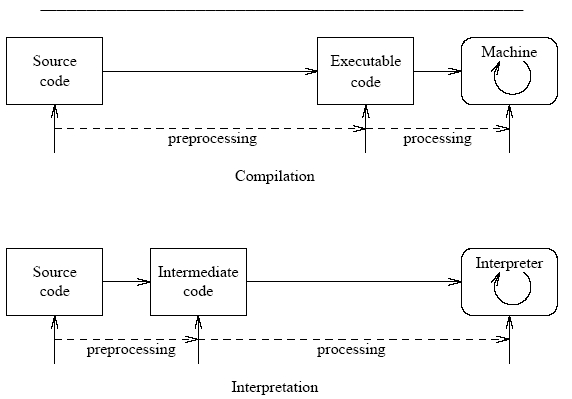
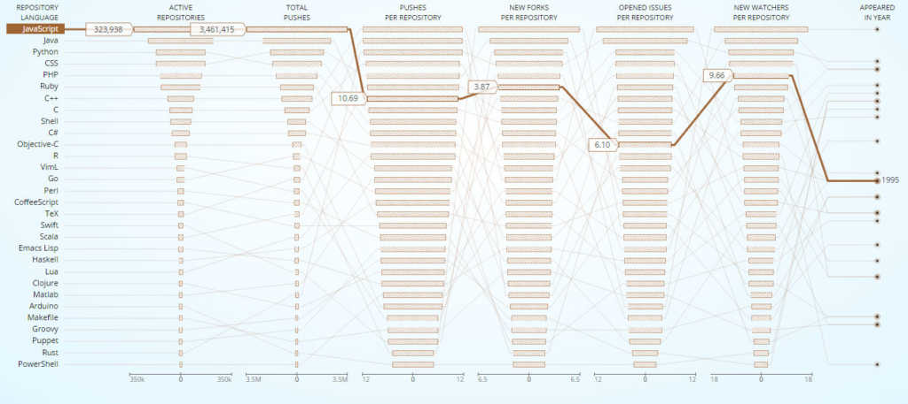

✰ Javascript ✰
Langage de programmation
Créé en 1995 par Brendan Eich ( informaticien américain )

Langage standardisé sous le nom d'ECMAScript par Ecma International :
European association for standardizing information and communication systems basé à Genève
Standardisation == Règles communes pour compatibilité
Le standard est actuellement à la 8ème édition ➙ ES8
✰ Javascript ✰
Langage de scripts principalement employé dans les pages web
Les usages principaux sont de créer :
- Du Dynamisme ➙ animation
- De l'Interactivité ➙ événement au clique
Le code JavaScript est interprété à la volée (JIT Just in time)
✰ Javascript ✰
Langage orienté objet basé sur des prototypes
Un prototype est un objet à partir duquel on crée de nouveaux objets
Un objet est un ensemble de propriétés et de méthodes
const object = {
// propriété
pseudo: 'Bobby'
// méthode
sayHello: return `Hello ${this.pseudo}`
};
Limite du Javascript
Pour des raisons de sécurité, hormis pour les cookies,
il n'est pas possible de lire et d'écrire sur le disque dur du visiteur
✰ Javascript ✰
Un écosystème très riche

Il existe une multitude de Frameworks/librairies
tels que jQuery, React, VueJS ... avec de grandes communautés.
"Most Popular" langage sur Stackoverflow
♾ SOURCES ♾